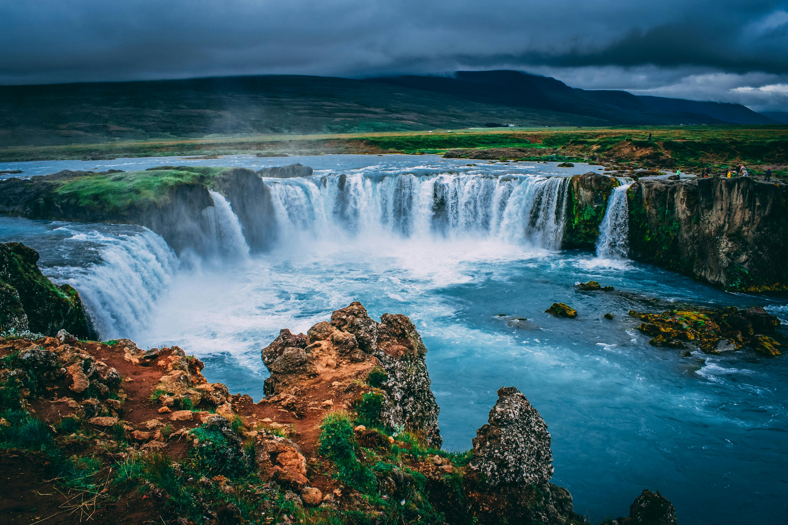

Angel Falls in Venezuela, the world's highest waterfall
Waterfalls represent some of nature's most dramatic displays of power and beauty, where rivers make sudden vertical drops. Angel Falls in Venezuela plunges 3,212 feet - so high that much of the water evaporates or gets blown away as mist before reaching the bottom. Waterfalls form where rivers flow over resistant rock layers, often in mountainous areas where tectonic forces have created elevation changes.
The physics of waterfalls is fascinating - the falling water aerates the pool below, creating high oxygen levels that support unique ecosystems. The constant spray creates microclimates where specialized mosses, ferns and orchids thrive. Niagara Falls erodes upstream at about 1 foot per year, while Zambia's Victoria Falls maintains its position as the Zambezi River cuts through volcanic basalt.
Waterfall Types
- Plunge: Vertical drop with no contact with rock face (e.g., Yosemite Falls)
- Horsetail: Maintains some contact as it falls (e.g., Bridalveil Fall)
- Cataract: Extremely powerful waterfall (e.g., Niagara Falls)
- Tiered: Series of distinct drops (e.g., Havasu Falls)
Some waterfalls like those in canyons are seasonal, flowing only during snowmelt or rainy seasons. Others like Iceland's Dettifoss maintain tremendous power year-round from glacial meltwater.
Waterfalls play important ecological roles by creating barriers that separate fish populations, leading to unique species evolving above and below the falls. They also oxygenate water and provide ideal conditions for many insects and birds. The mist zones around waterfalls like Brazil's Iguazu Falls support lush "micro-forests" with plant species found nowhere else in the surrounding forest.
Explore other water features like river rapids or ocean cliffs.
Return to homepage.